1.2 Numerical demonstration
We shall use the glmnet package in R for the computations related to lasso, ridge regression, elastic net and adaptive lasso. The glmnet package is developed by Friedman et al. (2021).
Let \(\Sigma\) be a \(100 \times 100\) covariance matrix defined by \(\sigma_{i j} = 0.5 + 0.5 \mathbb{I}(i = j)\). Let \(X\) be a \(100\) dimensional random vector with \(X \sim N_{100}( 0, \Sigma )\). Denote the \(i\)th coordinate of \(X\) as \(X_i\), \(i = 1, \ldots, 100\). We consider the following regression problem: \(Y = (1 - X_1 + 2 X_2 - 3 X_3 + 4 X_4 - 5 X_5 + 6 X_6) + e\), where \(e\) is an error variable independent of \(X\). We have a sample of size \(30\) on \(Y\) and \(X\), based on which we shall estimate the coefficient vector using different types of regularizations.
# Data generation; setting the seed for reproducible outcome
set.seed(1234)
Mu = rep(0, 100)
SIGMA = matrix(0.5, nrow = 100, ncol = 100) +
diag(0.5, nrow = 100, ncol = 100)
X = MASS::mvrnorm(n = 30, mu = Mu, Sigma = SIGMA)
X_with_intercept = cbind(1, X)
Beta = c(c(1, -1, 2, -3, 4, -5, 6), rep(0, (100 - 6)))
Y = X_with_intercept %*% Beta + rnorm(30)First we need to install the package glmnet.
install.packages('glmnet')1.2.1 Lasso computation
We now demonstrate the lasso method on this model.
# Loading the 'glmnet' package
require(glmnet)## Warning: package 'glmnet' was built under R version 4.1.2# Constructing the lasso solution paths
fit_lasso = glmnet(X, Y)We can plot the lasso solution paths using the plot function. The indices of the covariate variables are written on the left side. Notice that the coefficient paths for \(X_6\) and \(X_5\) are the most prominent, and then comes \(X_4\). Do you understand the underlying cause?
plot(fit_lasso, xvar = 'lambda', label = TRUE)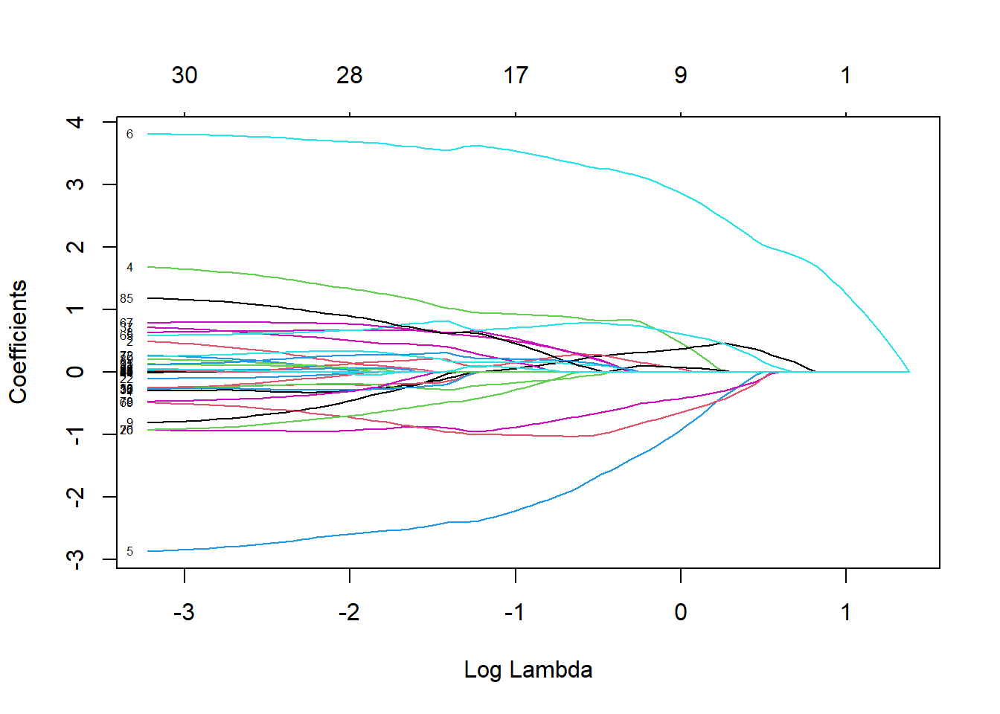
Using the function cv.glmnet, we can find the value of the cross-validated tuning parameter \(\lambda\).
cv_fit_lasso = cv.glmnet(X, Y)We can visually inspect the mean-squared error for different values of lambda; the two bars along the mean-squared error curve are the upper and the lower standard deviation curves.
plot(cv_fit_lasso)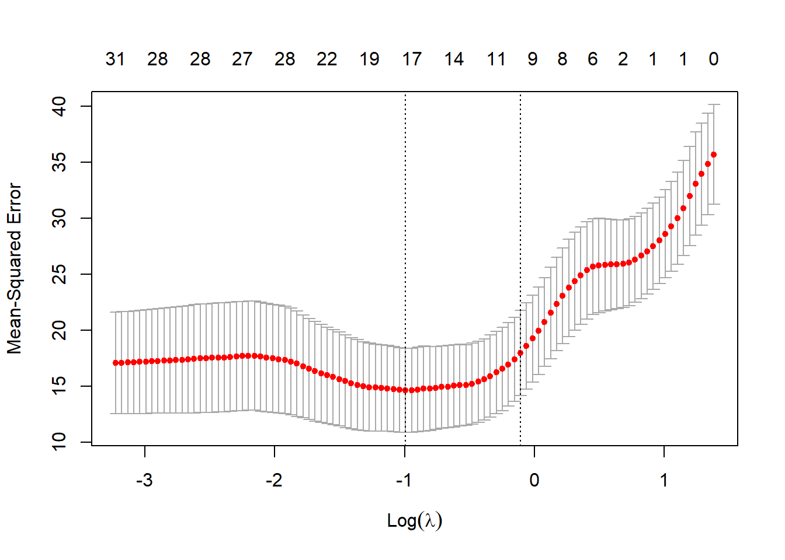
In the plot above, we note that two specific \(\lambda\) values are marked by vertical dotted lines. One of them, denoted by lambda.min, is the value of \(\lambda\) which corresponds to the minimum cross-validated error. The other one, denoted by lambda.1se, is the largest value of \(\lambda\) such that the corresponding cross-validated error is within one standard error of the minimum. This value of \(\lambda\) corresponds to the most regularized model with the cross-validated error being within one standard error of the minimum cross-validated error. In case of the lasso, since with increasing \(\lambda\) the number of non-zero coefficients decreases, the number of non-zero coefficients corresponding to lambda.1se is typically lower than that corresponding to lambda.min.
We can access the lambda value corresponding to the minimum cross-validated error in the following way.
lambda_min_lasso = cv_fit_lasso$lambda.min
writeLines(paste('Cross-validated lambda for lasso:',
lambda_min_lasso))## Cross-validated lambda for lasso: 0.370549314393551We can get the coefficients of the fitted model at the cross-validated lambda in the following way.
coefficients_lasso = coef(cv_fit_lasso, s = 'lambda.min')
print(coefficients_lasso)## 101 x 1 sparse Matrix of class "dgCMatrix"
## s1
## (Intercept) 1.80973757
## V1 .
## V2 .
## V3 .
## V4 0.92449282
## V5 -2.21218789
## V6 3.53342728
## V7 .
## V8 0.53117420
## V9 .
## V10 .
## V11 .
## V12 .
## V13 .
## V14 .
## V15 .
## V16 .
## V17 .
## V18 .
## V19 .
## V20 .
## V21 .
## V22 .
## V23 .
## V24 .
## V25 .
## V26 -0.87597982
## V27 0.06242635
## V28 .
## V29 .
## V30 .
## V31 .
## V32 -0.17019138
## V33 .
## V34 .
## V35 .
## V36 .
## V37 0.16030531
## V38 .
## V39 .
## V40 .
## V41 .
## V42 .
## V43 .
## V44 .
## V45 .
## V46 .
## V47 0.15672602
## V48 .
## V49 .
## V50 .
## V51 .
## V52 .
## V53 .
## V54 .
## V55 .
## V56 .
## V57 .
## V58 .
## V59 .
## V60 .
## V61 .
## V62 .
## V63 .
## V64 .
## V65 0.70974838
## V66 .
## V67 0.49131462
## V68 .
## V69 -1.01075761
## V70 -0.27985153
## V71 .
## V72 .
## V73 .
## V74 .
## V75 0.15711661
## V76 .
## V77 .
## V78 .
## V79 .
## V80 .
## V81 .
## V82 .
## V83 .
## V84 .
## V85 0.45198207
## V86 .
## V87 .
## V88 .
## V89 .
## V90 .
## V91 0.20589889
## V92 .
## V93 .
## V94 .
## V95 .
## V96 .
## V97 .
## V98 0.06768265
## V99 .
## V100 .As can be seen above, the coefficients are returned in a sparse matrix format. We can convert that to the usual numeric format in the following way. Remember that the intercept term will occupy the first position in the resulting vector.
coefficients_lasso = as.numeric(coefficients_lasso)
# Finding the number of zero coefficients
number_zero_coefficients_lasso = sum(coefficients_lasso == 0)
writeLines(paste('Number of zero coefficients in lasso for',
'cross-validated lambda:\n',
number_zero_coefficients_lasso))## Number of zero coefficients in lasso for cross-validated lambda:
## 83# Finding which covariates have a non-zero coefficient in the
# fitted model; the '-1' accounts for the intercept term
indices_nonzero_coefficients_lasso =
which(coefficients_lasso != 0) - 1To get the coefficients at the value of \(\lambda\) which gives the most regularized model such that the cross-validated error is within one standard error of the minimum, we use the following command.
coefficients_lasso_most_regularized =
coef(cv_fit_lasso, s = 'lambda.1se')
coefficients_lasso_most_regularized =
as.numeric(coefficients_lasso_most_regularized)
# Finding the number of zero coefficients
number_zero_coefficients_lasso_most_regularized =
sum(coefficients_lasso_most_regularized == 0)
writeLines(paste('Number of zero coefficients in lasso for \n',
'the most regularized model:',
number_zero_coefficients_lasso_most_regularized))## Number of zero coefficients in lasso for
## the most regularized model: 91Note that the number of zero coefficients corresponding to lambda.1se is higher than that corresponding to lambda.min. We can find the coefficients at some other value of lambda also, in the same way.
coefficients_lasso_s = coef(cv_fit_lasso, s = 0.5)
print(coefficients_lasso_s)## 101 x 1 sparse Matrix of class "dgCMatrix"
## s1
## (Intercept) 1.767178719
## V1 .
## V2 .
## V3 .
## V4 0.886211639
## V5 -1.930076221
## V6 3.373783767
## V7 .
## V8 0.337440156
## V9 .
## V10 .
## V11 .
## V12 .
## V13 .
## V14 .
## V15 .
## V16 .
## V17 .
## V18 .
## V19 .
## V20 .
## V21 .
## V22 .
## V23 .
## V24 .
## V25 .
## V26 -0.739860240
## V27 0.173458826
## V28 .
## V29 .
## V30 .
## V31 .
## V32 -0.099445511
## V33 .
## V34 .
## V35 .
## V36 .
## V37 .
## V38 .
## V39 .
## V40 .
## V41 .
## V42 .
## V43 .
## V44 .
## V45 .
## V46 .
## V47 0.272255598
## V48 .
## V49 .
## V50 .
## V51 .
## V52 .
## V53 .
## V54 .
## V55 .
## V56 .
## V57 .
## V58 .
## V59 .
## V60 .
## V61 .
## V62 .
## V63 .
## V64 .
## V65 0.775881117
## V66 .
## V67 0.342180469
## V68 .
## V69 -1.030152116
## V70 -0.049587703
## V71 .
## V72 .
## V73 .
## V74 .
## V75 0.136389337
## V76 .
## V77 .
## V78 .
## V79 .
## V80 .
## V81 .
## V82 .
## V83 .
## V84 .
## V85 0.173826167
## V86 .
## V87 .
## V88 .
## V89 .
## V90 .
## V91 0.178492348
## V92 .
## V93 .
## V94 .
## V95 .
## V96 .
## V97 .
## V98 0.002456585
## V99 .
## V100 .To predict the response at some value of the covariates, we use the following command. The argument newx must be supplied as a matrix and not a vector.
x_0 = matrix(rnorm(100), nrow = 1, ncol = 100)
predicted_Y = predict(cv_fit_lasso, newx = x_0, s = 'lambda.min')
writeLines(paste('Predicted response:', predicted_Y))## Predicted response: 7.6561153394393We can predict at several sets of values of the covariates using the same command.
x_0_values = matrix(rnorm(3*100), nrow = 3, ncol = 100)
predict(cv_fit_lasso, newx = x_0_values, s = 'lambda.min')## lambda.min
## [1,] 4.901129
## [2,] -6.576428
## [3,] 10.584152We can also predict at different values of lambda.
x_0_values = matrix(rnorm(3*100), nrow = 3, ncol = 100)
predict(cv_fit_lasso, newx = x_0_values, s = c(0.5, 0.8))## s1 s2
## [1,] -1.3774519 -0.5203943
## [2,] 2.0691667 1.9047106
## [3,] -0.5446435 -0.91825581.2.2 Ridge regression computation
We next demonstrate the ridge regression method. The commands for the ridge regression method are identical with the lasso, except passing the value of another parameter alpha = 0 to the glmnet function, which overwrites the default value of alpha = 1. The default value alpha = 1 corresponds to the lasso method, and the value alpha = 0 corresponds to ridge regression method.
# Constructing the ridge regression solution paths; 'alpha = 0'
# corresponds to the ridge regression method
fit_ridge = glmnet(X, Y, alpha = 0)
# Plotting the ridge regression solution paths
plot(fit_ridge, xvar = 'lambda', label = TRUE)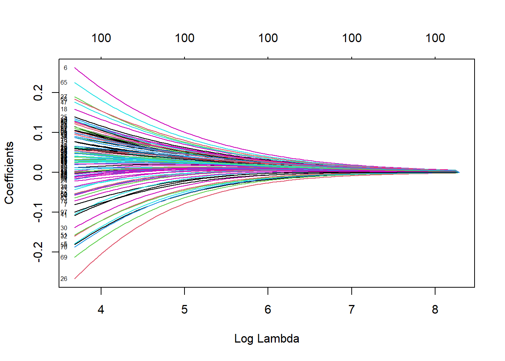
Note that the coefficients do not become zero with inreasing \(\lambda\). The function ‘cv.glmnet’ with alpha = 0 yields the value of the cross-validated \(\lambda\) for the ridge regression.
# 'alpha = 0' corresponds to the ridge regression
cv_fit_ridge = cv.glmnet(X, Y, alpha = 0)
# Plotting the mean-squared error for different values of lambda
plot(cv_fit_ridge)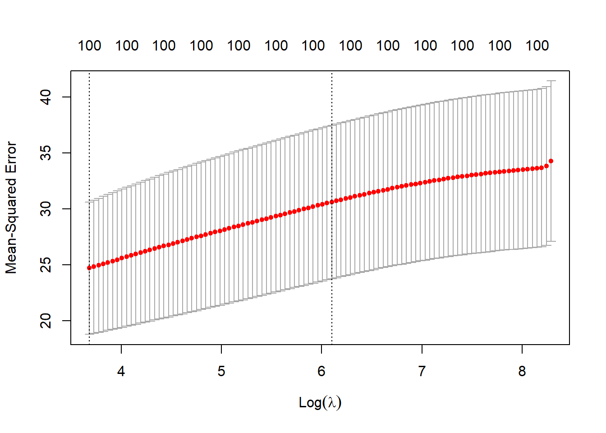
# Accessing the lambda value corresponding to the minimum
# cross-validated error
lambda_min_ridge = cv_fit_ridge$lambda.min
writeLines(paste('Cross-validated lambda for ridge:',
lambda_min_ridge))## Cross-validated lambda for ridge: 39.7327883962604Below we obtain the coefficients of the fitted ridge regression model at the cross-validated lambda.
coefficients_ridge = coef(cv_fit_ridge, s = 'lambda.min')
print(coefficients_ridge)## 101 x 1 sparse Matrix of class "dgCMatrix"
## s1
## (Intercept) 1.7109491793
## V1 -0.1083085252
## V2 0.0289382847
## V3 0.0874521464
## V4 0.1351638781
## V5 -0.1791263703
## V6 0.2630018842
## V7 -0.0811946856
## V8 0.0953859520
## V9 -0.0567241489
## V10 -0.0092322109
## V11 0.0237973432
## V12 0.0023652436
## V13 0.0627102051
## V14 0.0407541258
## V15 0.0643875971
## V16 -0.0029789548
## V17 0.0239322364
## V18 0.1584882590
## V19 0.0775910315
## V20 0.0384100813
## V21 0.0988288390
## V22 -0.0006264409
## V23 -0.0435152903
## V24 -0.0218175823
## V25 0.1393288854
## V26 -0.2674413054
## V27 0.1901822555
## V28 0.0189121325
## V29 0.0622712798
## V30 -0.1391918711
## V31 -0.0019822391
## V32 -0.1603607172
## V33 0.0386014016
## V34 -0.0175624312
## V35 0.0396806825
## V36 -0.0358246174
## V37 0.0910033961
## V38 0.0600965338
## V39 0.0374900113
## V40 0.0471962575
## V41 -0.1057321981
## V42 0.1279890565
## V43 0.0769178361
## V44 0.0532354798
## V45 0.0255123294
## V46 0.0874539653
## V47 0.1761787143
## V48 -0.0050762766
## V49 0.0596021880
## V50 0.1263894979
## V51 -0.1577883648
## V52 -0.0553016596
## V53 0.0495713022
## V54 -0.0152558777
## V55 -0.1817212669
## V56 0.1037481509
## V57 0.1107477311
## V58 0.0905209792
## V59 0.0279373188
## V60 0.1140120010
## V61 0.1060607720
## V62 -0.0543002733
## V63 -0.0646601364
## V64 0.0535504253
## V65 0.2259343785
## V66 -0.0119965275
## V67 0.1153978113
## V68 0.1839346145
## V69 -0.2130429880
## V70 -0.1881321515
## V71 0.0064749093
## V72 0.1286295454
## V73 0.0595155004
## V74 0.0307595428
## V75 0.1139984622
## V76 0.0322028103
## V77 -0.0374223743
## V78 -0.0721740256
## V79 0.0112816650
## V80 -0.0009252485
## V81 0.0326936742
## V82 0.0665158297
## V83 0.0296031295
## V84 0.0204508045
## V85 0.1315162061
## V86 0.0545900253
## V87 0.0408206633
## V88 0.0112714252
## V89 0.1312721221
## V90 -0.0575812931
## V91 0.1059293356
## V92 0.1223877048
## V93 0.0013630864
## V94 0.0490835636
## V95 0.0408392873
## V96 -0.0113738133
## V97 -0.0997274582
## V98 0.0990380910
## V99 0.0497533757
## V100 0.1000894670Note that the coefficients are nonzero unlike the lasso. In case of the ridge regression, the value lambda.1se is not so interesting as in case of the lasso, as here there is no question of reducing any coefficient to zero.
coefficients_ridge = as.numeric(coefficients_ridge)
# Finding the number of nonzero coefficients; the '-1' accounts
# for the intercept term
number_nonzero_coefficients_ridge =
sum(coefficients_ridge != 0) - 1
writeLines(paste('Number of nonzero coefficients for',
'the ridge regression:\n',
number_nonzero_coefficients_ridge))## Number of nonzero coefficients for the ridge regression:
## 100Finding the coefficients at some other value of lambda is the same as in the case of the lasso.
coefficients_ridge_s = coef(cv_fit_ridge, s = 0.5)
print(coefficients_ridge_s)## 101 x 1 sparse Matrix of class "dgCMatrix"
## s1
## (Intercept) 1.7109491793
## V1 -0.1083085252
## V2 0.0289382847
## V3 0.0874521464
## V4 0.1351638781
## V5 -0.1791263703
## V6 0.2630018842
## V7 -0.0811946856
## V8 0.0953859520
## V9 -0.0567241489
## V10 -0.0092322109
## V11 0.0237973432
## V12 0.0023652436
## V13 0.0627102051
## V14 0.0407541258
## V15 0.0643875971
## V16 -0.0029789548
## V17 0.0239322364
## V18 0.1584882590
## V19 0.0775910315
## V20 0.0384100813
## V21 0.0988288390
## V22 -0.0006264409
## V23 -0.0435152903
## V24 -0.0218175823
## V25 0.1393288854
## V26 -0.2674413054
## V27 0.1901822555
## V28 0.0189121325
## V29 0.0622712798
## V30 -0.1391918711
## V31 -0.0019822391
## V32 -0.1603607172
## V33 0.0386014016
## V34 -0.0175624312
## V35 0.0396806825
## V36 -0.0358246174
## V37 0.0910033961
## V38 0.0600965338
## V39 0.0374900113
## V40 0.0471962575
## V41 -0.1057321981
## V42 0.1279890565
## V43 0.0769178361
## V44 0.0532354798
## V45 0.0255123294
## V46 0.0874539653
## V47 0.1761787143
## V48 -0.0050762766
## V49 0.0596021880
## V50 0.1263894979
## V51 -0.1577883648
## V52 -0.0553016596
## V53 0.0495713022
## V54 -0.0152558777
## V55 -0.1817212669
## V56 0.1037481509
## V57 0.1107477311
## V58 0.0905209792
## V59 0.0279373188
## V60 0.1140120010
## V61 0.1060607720
## V62 -0.0543002733
## V63 -0.0646601364
## V64 0.0535504253
## V65 0.2259343785
## V66 -0.0119965275
## V67 0.1153978113
## V68 0.1839346145
## V69 -0.2130429880
## V70 -0.1881321515
## V71 0.0064749093
## V72 0.1286295454
## V73 0.0595155004
## V74 0.0307595428
## V75 0.1139984622
## V76 0.0322028103
## V77 -0.0374223743
## V78 -0.0721740256
## V79 0.0112816650
## V80 -0.0009252485
## V81 0.0326936742
## V82 0.0665158297
## V83 0.0296031295
## V84 0.0204508045
## V85 0.1315162061
## V86 0.0545900253
## V87 0.0408206633
## V88 0.0112714252
## V89 0.1312721221
## V90 -0.0575812931
## V91 0.1059293356
## V92 0.1223877048
## V93 0.0013630864
## V94 0.0490835636
## V95 0.0408392873
## V96 -0.0113738133
## V97 -0.0997274582
## V98 0.0990380910
## V99 0.0497533757
## V100 0.1000894670We can also predict at several sets of values of the covariates and at different values of lambda for the fitted ridge regression model. The argument newx always must be a matrix, even if we are predicting at only one set of values of the covariates.
x_0_values = matrix(rnorm(3*100), nrow = 3, ncol = 100)
predict(cv_fit_ridge, newx = x_0_values, s = c(0.5, 0.8))## s1 s2
## [1,] 2.2248989 2.2248989
## [2,] 2.5238977 2.5238977
## [3,] 0.3758271 0.37582711.2.3 Elastic net computation
From the description of the elastic net in subsection 1.1.3, and the codes for computing the lasso and the ridge regression solutions in subsection 1.2.1 and subsection 1.2.2 respectively, you might have guessed that the function glmnet actually computed the elastic net solutions for different values of the parameter \(\alpha\): \(\alpha = 1\) corresponds to the lasso and \(\alpha = 0\) corresponds to the ridge regression method. So, the same code with a value of the argument alpha in \((0, 1)\) will return the elastic net solution for that value of \(\alpha\). Below, we demonstrate the computation for \(\alpha = 0.5\).
# Constructing the elastic net solution paths for 'alpha = 0.5'
fit_elnet = glmnet(X, Y, alpha = 0.5)
# Plotting the elastic net solution paths
plot(fit_elnet, xvar = 'lambda', label = TRUE)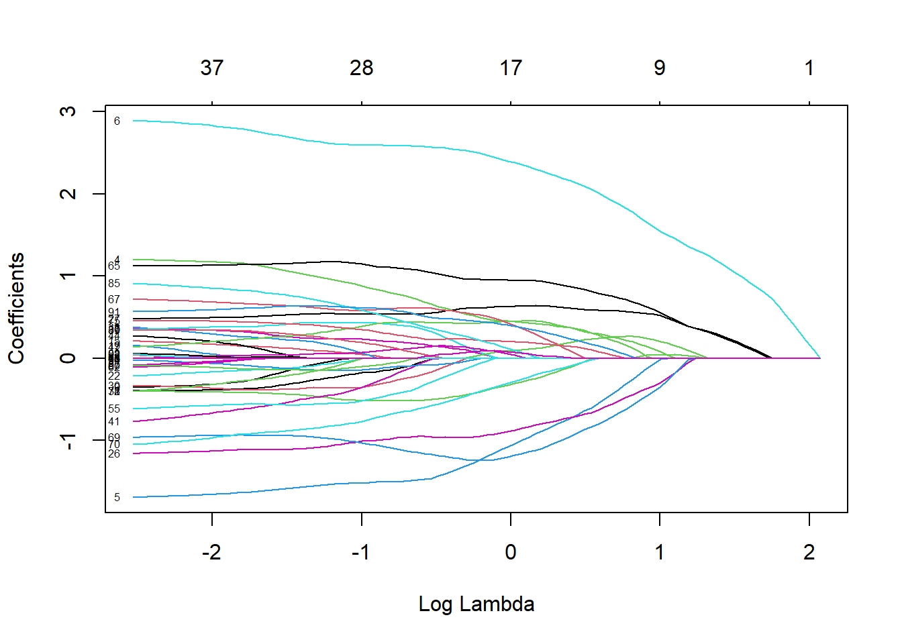
Note that the coefficients become zero with inreasing \(\lambda\) like in the case of the lasso.
# Cross-validation for elastic net with 'alpha = 0.5'
cv_fit_elnet = cv.glmnet(X, Y, alpha = 0.5)
# Plotting the mean-squared error for different values of lambda
plot(cv_fit_elnet)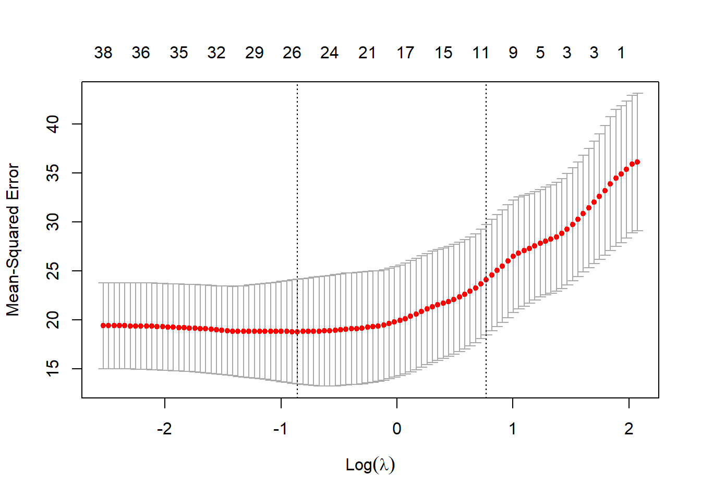
# Accessing the lambda value corresponding to the minimum
# cross-validated error
lambda_min_elnet = cv_fit_elnet$lambda.min
writeLines(paste('Cross-validated lambda for elastic net:',
lambda_min_elnet))## Cross-validated lambda for elastic net: 0.424083882576011# Coefficients of the fitted elastic net at the cross-validated
# lambda
coefficients_elnet = coef(cv_fit_elnet, s = 'lambda.min')
print(coefficients_elnet)## 101 x 1 sparse Matrix of class "dgCMatrix"
## s1
## (Intercept) 2.11279990
## V1 -0.15092287
## V2 .
## V3 .
## V4 0.82409055
## V5 -1.50317945
## V6 2.59241473
## V7 .
## V8 0.21545204
## V9 .
## V10 .
## V11 .
## V12 .
## V13 .
## V14 .
## V15 0.02007609
## V16 .
## V17 .
## V18 .
## V19 .
## V20 .
## V21 .
## V22 .
## V23 .
## V24 .
## V25 .
## V26 -0.98502236
## V27 0.54189086
## V28 .
## V29 .
## V30 -0.30190044
## V31 .
## V32 -0.51413064
## V33 .
## V34 .
## V35 .
## V36 .
## V37 0.42556645
## V38 .
## V39 .
## V40 .
## V41 -0.25103695
## V42 .
## V43 .
## V44 .
## V45 .
## V46 .
## V47 0.42890488
## V48 .
## V49 .
## V50 .
## V51 -0.11850576
## V52 .
## V53 .
## V54 .
## V55 -0.46259584
## V56 .
## V57 .
## V58 .
## V59 .
## V60 .
## V61 .
## V62 .
## V63 .
## V64 .
## V65 1.11118958
## V66 .
## V67 0.60206411
## V68 .
## V69 -1.07119524
## V70 -0.70044279
## V71 .
## V72 0.09785610
## V73 .
## V74 .
## V75 0.31266992
## V76 .
## V77 .
## V78 .
## V79 .
## V80 .
## V81 .
## V82 .
## V83 .
## V84 .
## V85 0.51997636
## V86 .
## V87 .
## V88 .
## V89 0.15174385
## V90 -0.07005343
## V91 0.60397991
## V92 .
## V93 .
## V94 .
## V95 .
## V96 .
## V97 .
## V98 .
## V99 .
## V100 .Note that many of the coefficients are zero like the lasso. However, the number of zero coefficients is lower than the lasso.
coefficients_elnet = as.numeric(coefficients_elnet)
# Finding the number of nonzero coefficients; the '-1' accounts
# for the intercept term
number_nonzero_coefficients_elnet =
sum(coefficients_elnet != 0) - 1
writeLines(paste('Number of nonzero coefficients for',
'the elastic net:',
number_nonzero_coefficients_elnet))## Number of nonzero coefficients for the elastic net: 25# Computing the coefficients at some other value of lambda
coefficients_elnet_s = coef(cv_fit_elnet, s = 0.5)
print(coefficients_elnet_s)## 101 x 1 sparse Matrix of class "dgCMatrix"
## s1
## (Intercept) 2.04051028
## V1 -0.09756072
## V2 .
## V3 .
## V4 0.75068788
## V5 -1.49223014
## V6 2.58752206
## V7 .
## V8 0.18902712
## V9 .
## V10 .
## V11 .
## V12 .
## V13 .
## V14 .
## V15 .
## V16 .
## V17 .
## V18 .
## V19 .
## V20 .
## V21 .
## V22 .
## V23 .
## V24 .
## V25 .
## V26 -0.95807495
## V27 0.53735119
## V28 .
## V29 .
## V30 -0.23907252
## V31 .
## V32 -0.51110747
## V33 .
## V34 .
## V35 .
## V36 .
## V37 0.39406628
## V38 .
## V39 .
## V40 .
## V41 -0.12997961
## V42 .
## V43 .
## V44 .
## V45 .
## V46 .
## V47 0.44055872
## V48 .
## V49 .
## V50 .
## V51 -0.09072844
## V52 .
## V53 .
## V54 .
## V55 -0.39664432
## V56 .
## V57 .
## V58 .
## V59 .
## V60 .
## V61 .
## V62 .
## V63 .
## V64 .
## V65 1.08905420
## V66 .
## V67 0.61168096
## V68 .
## V69 -1.12571292
## V70 -0.63958967
## V71 .
## V72 0.11705065
## V73 .
## V74 .
## V75 0.27052397
## V76 .
## V77 .
## V78 .
## V79 .
## V80 .
## V81 .
## V82 .
## V83 .
## V84 .
## V85 0.43965564
## V86 .
## V87 .
## V88 .
## V89 0.09232706
## V90 -0.01848038
## V91 0.56203662
## V92 .
## V93 .
## V94 .
## V95 .
## V96 .
## V97 .
## V98 .
## V99 .
## V100 .# Predicting at several sets of values of the covariates and at
# different values of lambda for the fitted elastic net
x_0_values = matrix(rnorm(3*100), nrow = 3, ncol = 100)
predict(cv_fit_elnet, newx = x_0_values, s = c(0.5, 0.8))## s1 s2
## [1,] -6.386536 -4.828346
## [2,] 3.403320 2.583454
## [3,] -3.042642 -3.0581121.2.4 Adaptive lasso computation
Recall the description of the adaptive lasso method in subsection 1.1.4. We shall demonstrate the adaptive lasso with \(\gamma = 1\) taking the usual cross-validated lasso solution as the initial estimate.
First we compute the cross-validated lasso solution.
# Computing the coefficient for the cross-validated lasso estimate
cv_fit_lasso = cv.glmnet(X, Y)
coefficients_lasso = coef(cv_fit_lasso, s = 'lambda.min')
# Dropping the intercept term in the cross-validated lasso
# estimate
coefficients_lasso = as.numeric(coefficients_lasso)[-1]
# Computing the adaptive lasso estimate. The argument
# 'penalty.factor' assigns weights to the coefficients, with the
# convention of r / 0 = Infinity for r > 0.
cv_fit_adaptive =
cv.glmnet(X, Y, penalty.factor = 1 / abs(coefficients_lasso))
coefficients_adaptive = coef(cv_fit_adaptive, s = 'lambda.min')
# Dropping the intercept term for the adaptive lasso estimate
coefficients_adaptive = as.numeric(coefficients_adaptive)[-1]Recall from subsection 1.1.4 that the adaptive lasso estimate is sparser than the lasso estimate. From the construction of our simulation setup, we know that only the coefficients of \(X_1\), \(X_2\), \(X_3\), \(X_4\), \(X_5\) and \(X_6\) are nonzero in the underlying model. Let us see the indices of the covariates with nonzero coefficients in the lasso estimate and the adaptive lasso estimate.
writeLines(paste('Indices of the covariates with nonzero',
'coefficients \n for the lasso estimate:\n',
paste(which(coefficients_lasso != 0),
collapse = ' ')))## Indices of the covariates with nonzero coefficients
## for the lasso estimate:
## 4 5 6 8 26 27 32 37 47 65 67 69 70 75 85 91 98writeLines(paste('Indices of the covariates with nonzero',
'coefficients \n for the adaptive lasso',
'estimate:\n',
paste(which(coefficients_adaptive != 0),
collapse = ' ')))## Indices of the covariates with nonzero coefficients
## for the adaptive lasso estimate:
## 4 5 6 8 26 65 67 69 85We note that the lasso estimate has 17 nonzero coordinates, while the adaptive lasso has 9 nonzero coordinates. So, the adaptive lasso estimate is indeed sparser than the lasso estimate. However, both of them erroneously estimate several zero coefficients as nonzero, and fail to capture several nonzero coefficients.
1.2.5 Group lasso computation
For the group lasso computation, we shall use the gglasso package by Yang, Zou, and Bhatnagar (2020). We shall use the same simulation setup, but the covariates will be divided in groups in the following way: \(X_1, \ldots, X_5\) in the first group, \(X_6, \ldots, X_10\) in the second group, and so on. We form the group indices below, which will be required.
group_indices = c()
for (i in 1:20)
group_indices = c(group_indices, rep(i, 5))
writeLines('First 20 group indices are:')## First 20 group indices are:print(group_indices[1:20])## [1] 1 1 1 1 1 2 2 2 2 2 3 3 3 3 3 4 4 4 4 4The following command installs the package gglasso.
install.packages('gglasso')We now demonstrate the computation for the group lasso method. The commands are very similar to those in glmnet.
# Loading the 'gglasso' package
require(gglasso)## Warning: package 'gglasso' was built under R version 4.1.2# Constructing the group lasso solution paths
fit_group = gglasso(X, Y, group = group_indices)
# Plotting the ridge regression solution paths; the
# 'label' argument does not work here, unfortunately.
plot(fit_group, xvar = 'lambda')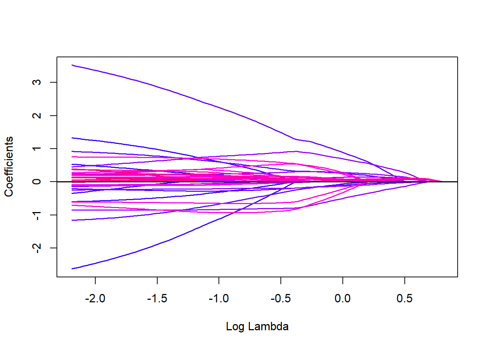
# Cross-validation for group lasso; 'nfolds' is a
# cross-validation parameter whose default value
# was 10 in our earlier calculations using the 'glmnet'
# package. Since its default parameter for the 'gglasso'
# package is different, we set that explicitly to 10
# here to maintain uniformity.
cv_fit_group = cv.gglasso(X, Y, group = group_indices,
nfolds = 10)
# Plotting the mean-squared error for different values of
# lambda in the group lasso cross-validation
plot(cv_fit_group)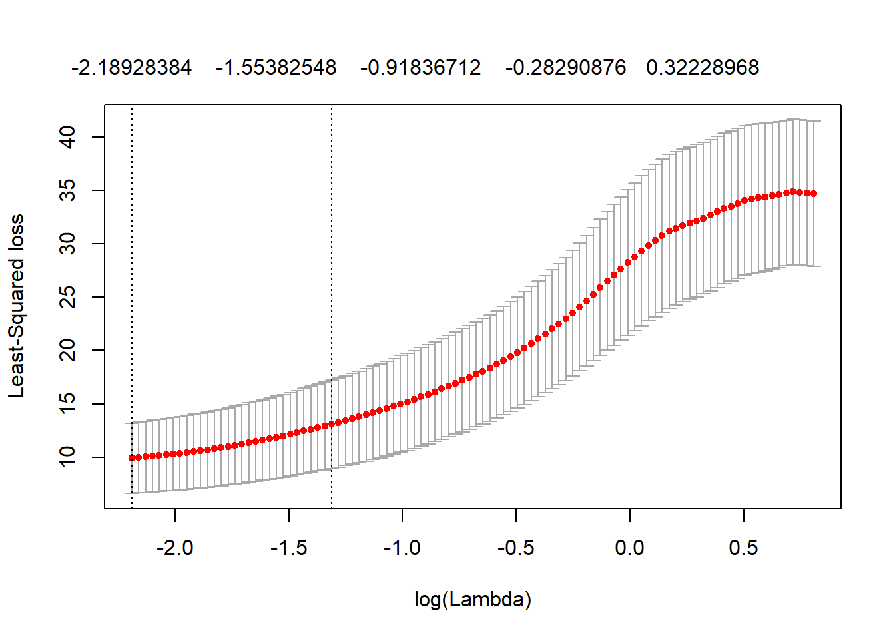
# Getting the lambda value corresponding to the minimum
# cross-validated error in the group lasso
lambda_min_group = cv_fit_group$lambda.min
writeLines(paste('Cross-validated lambda for group lasso:',
lambda_min_group))## Cross-validated lambda for group lasso: 0.111996927450172# Coefficients of the fitted group lasso at the
# cross-validated lambda
coefficients_group = coef(cv_fit_group, s = 'lambda.min')
print(coefficients_group)## 1
## (Intercept) 2.299964945
## V1 -0.597276460
## V2 0.532650084
## V3 -0.341296086
## V4 1.324008186
## V5 -2.620777857
## V6 3.520635169
## V7 -0.205739578
## V8 0.919717629
## V9 -1.158546608
## V10 -0.115243566
## V11 0.000000000
## V12 0.000000000
## V13 0.000000000
## V14 0.000000000
## V15 0.000000000
## V16 0.000000000
## V17 0.000000000
## V18 0.000000000
## V19 0.000000000
## V20 0.000000000
## V21 0.000000000
## V22 0.000000000
## V23 0.000000000
## V24 0.000000000
## V25 0.000000000
## V26 -0.843269703
## V27 0.454718935
## V28 -0.139688699
## V29 0.198558378
## V30 -0.245208698
## V31 0.000000000
## V32 0.000000000
## V33 0.000000000
## V34 0.000000000
## V35 0.000000000
## V36 0.000000000
## V37 0.000000000
## V38 0.000000000
## V39 0.000000000
## V40 0.000000000
## V41 0.000000000
## V42 0.000000000
## V43 0.000000000
## V44 0.000000000
## V45 0.000000000
## V46 0.049197887
## V47 0.133784587
## V48 0.006353655
## V49 0.000623473
## V50 0.051280996
## V51 0.000000000
## V52 0.000000000
## V53 0.000000000
## V54 0.000000000
## V55 0.000000000
## V56 0.000000000
## V57 0.000000000
## V58 0.000000000
## V59 0.000000000
## V60 0.000000000
## V61 0.127846059
## V62 -0.102298726
## V63 -0.084174083
## V64 0.140865202
## V65 0.276307972
## V66 0.055334287
## V67 0.754238086
## V68 0.215257426
## V69 -0.700822526
## V70 -0.602696078
## V71 0.147769008
## V72 0.245420916
## V73 0.242587489
## V74 0.126254804
## V75 0.371727647
## V76 0.000000000
## V77 0.000000000
## V78 0.000000000
## V79 0.000000000
## V80 0.000000000
## V81 0.048401665
## V82 -0.008353210
## V83 0.140023712
## V84 0.139982310
## V85 0.392935904
## V86 0.000000000
## V87 0.000000000
## V88 0.000000000
## V89 0.000000000
## V90 0.000000000
## V91 0.000000000
## V92 0.000000000
## V93 0.000000000
## V94 0.000000000
## V95 0.000000000
## V96 0.000000000
## V97 0.000000000
## V98 0.000000000
## V99 0.000000000
## V100 0.000000000# Computing the coefficients at some other value of lambda
# for the group lasso estimate
coefficients_group_s = coef(cv_fit_group, s = 0.5)
print(coefficients_group_s)## 1
## (Intercept) 2.446545801
## V1 -0.164606301
## V2 0.094789057
## V3 0.120037112
## V4 0.347808507
## V5 -0.593803459
## V6 1.804429746
## V7 -0.246614547
## V8 0.464199928
## V9 -0.460855429
## V10 0.019794050
## V11 0.000000000
## V12 0.000000000
## V13 0.000000000
## V14 0.000000000
## V15 0.000000000
## V16 0.000000000
## V17 0.000000000
## V18 0.000000000
## V19 0.000000000
## V20 0.000000000
## V21 0.000000000
## V22 0.000000000
## V23 0.000000000
## V24 0.000000000
## V25 0.000000000
## V26 -0.810113871
## V27 0.839345222
## V28 0.008647552
## V29 0.261184248
## V30 -0.190066878
## V31 0.000000000
## V32 0.000000000
## V33 0.000000000
## V34 0.000000000
## V35 0.000000000
## V36 0.000000000
## V37 0.000000000
## V38 0.000000000
## V39 0.000000000
## V40 0.000000000
## V41 0.000000000
## V42 0.000000000
## V43 0.000000000
## V44 0.000000000
## V45 0.000000000
## V46 0.007239078
## V47 0.015033387
## V48 0.003418754
## V49 0.004555346
## V50 0.010936767
## V51 0.000000000
## V52 0.000000000
## V53 0.000000000
## V54 0.000000000
## V55 0.000000000
## V56 0.000000000
## V57 0.000000000
## V58 0.000000000
## V59 0.000000000
## V60 0.000000000
## V61 0.131674540
## V62 -0.054091098
## V63 -0.033632054
## V64 0.092040935
## V65 0.258461382
## V66 0.172478602
## V67 0.634772294
## V68 0.494381080
## V69 -0.917556135
## V70 -0.647221136
## V71 0.053041142
## V72 0.137248090
## V73 0.147020100
## V74 0.094450596
## V75 0.202158872
## V76 0.000000000
## V77 0.000000000
## V78 0.000000000
## V79 0.000000000
## V80 0.000000000
## V81 0.000000000
## V82 0.000000000
## V83 0.000000000
## V84 0.000000000
## V85 0.000000000
## V86 0.000000000
## V87 0.000000000
## V88 0.000000000
## V89 0.000000000
## V90 0.000000000
## V91 0.000000000
## V92 0.000000000
## V93 0.000000000
## V94 0.000000000
## V95 0.000000000
## V96 0.000000000
## V97 0.000000000
## V98 0.000000000
## V99 0.000000000
## V100 0.000000000Notice that the group lasso method reduces to zero all the coefficients together in any group. Next, we predict the group lasso estimate at some sets of values of the covariates.
# Predicting at several sets of values of the covariates and at
# different values of lambda for the fitted group lasso; here
# 'type' is an argument whose value 'link' corresponds to
# regression prediction.
x_0_values = matrix(rnorm(3*100), nrow = 3, ncol = 100)
predict(cv_fit_group, newx = x_0_values, s = c(0.5, 0.8),
type = 'link')## 1 2
## [1,] 5.10055137 4.8965983
## [2,] 0.41015246 -0.2829483
## [3,] -0.02520761 0.86461781.2.6 Fused lasso computation
We shall demonstrate the idea of the fused lasso in a simpler model unlike the simulated regression setup used in the previous cases. Assume the response values are \(Y_i\), where \(i = 1, \ldots, n\), and \(Y_i \sim \theta_i + e_i\), where \(e_i\) are independent and identically distributed \(N(0, 0.25)\) random variables. Suppose the sequence \(\{\theta_i\}\) is piecewise constant, such that \(\theta_1 = \ldots = \theta_{20} = 2\), \(\theta_{21} = \ldots = \theta_{30} = 3\), \(\theta_{31} = \ldots = \theta_{40} = 0\), \(\theta_{41} = \ldots = \theta_{60} = 5\), \(\theta_{61} = \ldots = \theta_{85} = 1\) and \(\theta_{85} = \ldots = \theta_{100} = 0\). We want to find \[\hat{\theta} = \arg\min_{\theta \in \mathbb{R}^n} \left[ \sum_{i=1}^n (Y_i - \theta_i)^2 + \lambda \sum_{i=1}^{n-1} | \theta_i - \theta_{i+1} | \right].\] Below, we generate a sample from this model with \(n = 100\).
# Data generation for fused lasso with fixed seed
set.seed(1234)
Theta = c(rep(2, 20), rep(3, 10), rep(0, 10), rep(5, 20),
rep(1, 25), rep(0, 15))
Y = Theta + rnorm(100, mean = 0, sd = sqrt(0.25))We need the genlasso package (Arnold and Tibshirani 2020) for the fused lasso computation. The following command would install this package.
install.packages('genlasso')The fused lasso computation is demonstrated below.
# Loading the 'genlasso' package
require(genlasso)## Warning: package 'genlasso' was built under R version 4.1.2## Warning: package 'igraph' was built under R version 4.1.2# Constructing the fused lasso solution paths; since
# the coefficients here are recorded on a one dimensional
# grid, we use the function 'fusedlasso1d'.
fit_fused = fusedlasso1d(Y)
# Plotting the fused lasso solution paths along with the
# actual observations; the points are the actual observations.
plot(fit_fused)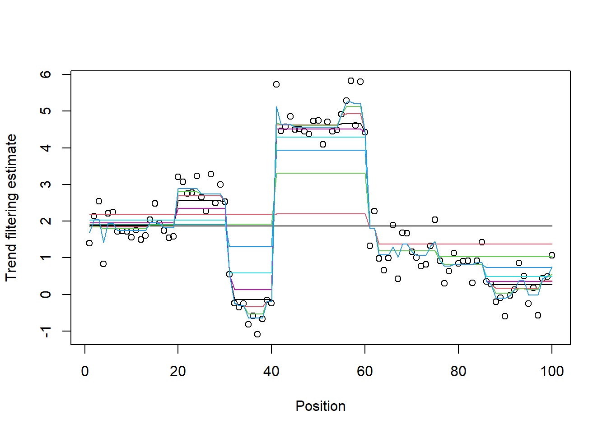
We note that the plot here is very different from the earlier examples, due to the difference in the nature of the problems (and also the packages used).
# Cross-validation for fused lasso; 'k' is the
# cross-validation parameter corresponding to 'nfolds' in
# earlier cases. Cross-validation is done using the
# 'cv.trendfilter' function.
cv_fit_fused = cv.trendfilter(fit_fused, k = 10)# Plotting the mean-squared error for different values of
# lambda in the fused lasso cross-validation
plot(cv_fit_fused)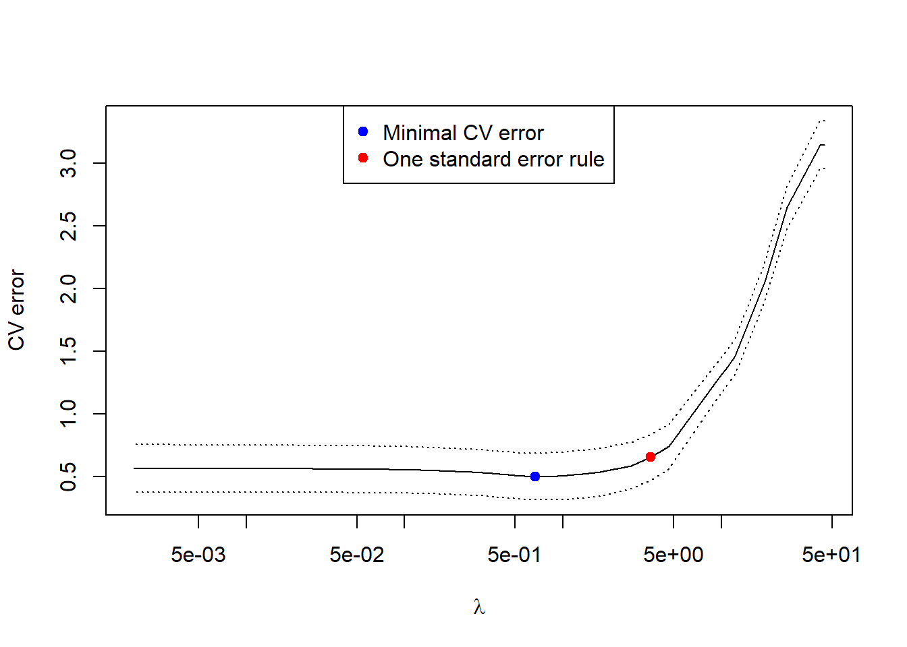
# Getting the lambda value corresponding to the minimum
# cross-validated error in the fused lasso
lambda_min_fused = cv_fit_fused$lambda.min
writeLines(paste('Cross-validated lambda for fused lasso:',
lambda_min_fused))## Cross-validated lambda for fused lasso: 0.67106063258858# Plotting the fused lasso estimate for the
# cross-validated lambda along with the actual observations
plot(fit_fused, lambda = lambda_min_fused,
main = paste('Estimated coefficients for the',
'cross-validated lambda'))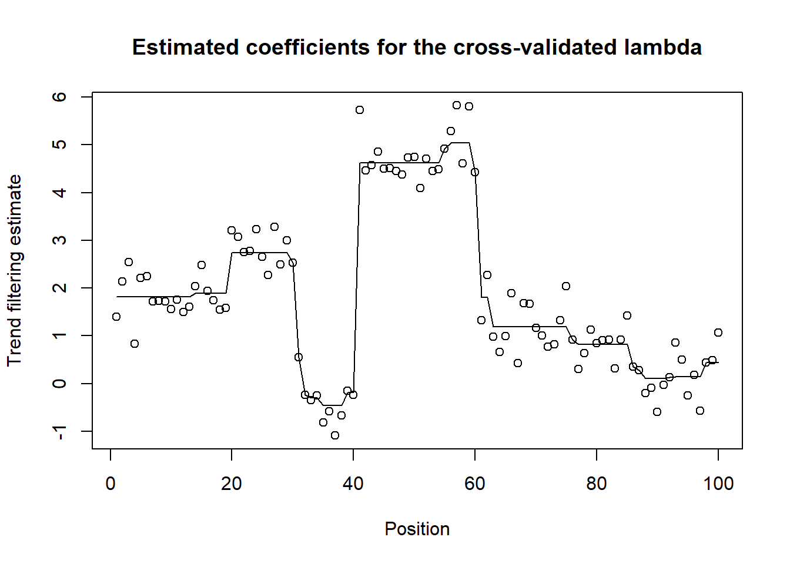